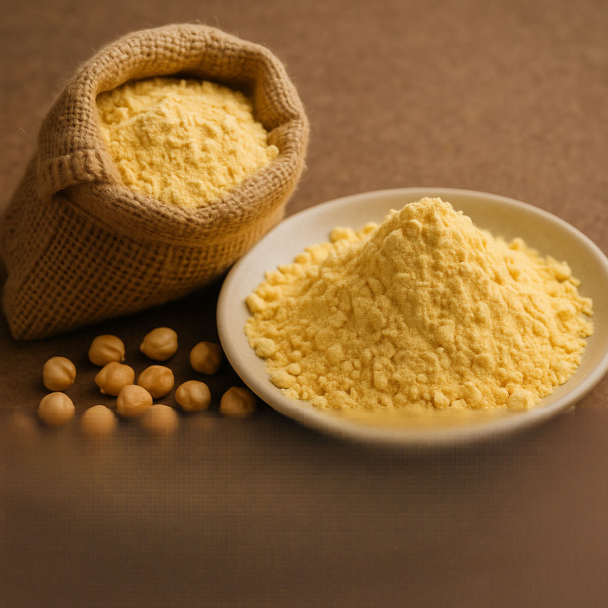

Talegaon · Parli Vaijnath · Beed Road
Freshly milled. Clean. Pure. Trusted by homes & shops.
Dattakrupa Besan & Dal Mill is located in Talegaon, Parli Vaijnath, Beed Road. We mill fresh, clean besan and dal for local families and businesses.
Phone: 8788487055
Address: Talegaon, Parli Vaijnath, Beed Road, Maharashtra